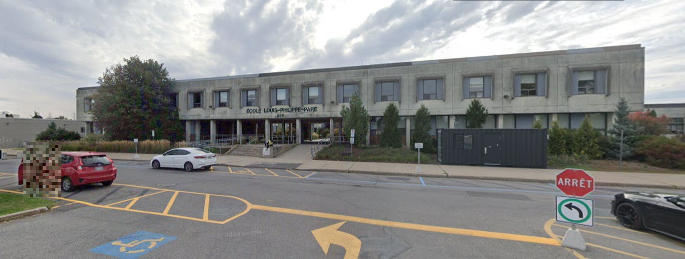

Groupe de recherche G2LC
Nous sommes G2LC, un groupe de 3 professeurs qui prennent part à l’expérience de <redacted> Nous nous occupons de la branche scolaire de ce projet.
Nous avons accepté ce projet car: Notre but est d’améliorer l’apprentissage de nos jeunes par des moyens qui surpassent les méthodes courantes d’éducation. Nous cherchons à dépasser ce qui est présentement possible, aller plus loin que ce que nous sommes capables de retenir, appliquer, avec notre cerveau à son état classique. Les images subliminales nous permettraient d’atteindre un niveau de capacités supérieur à la moyenne, afin de développer des générations à venir plus habiles et psychologiquement puissantes.
Expérience JuliuIS
JuliuIS est la branche de l’expérience sur les images subliminales se situant en milieu scolaire. L'objectif est de valider l'impact des images subliminales sur la capacité d'apprentissage des élèves.
Cette expérience entraîne le cerveau des élèves sujets au test. Nous étudierons leurs réactions et capacités à la suite d'expositions aux images subliminales. Leur exposition évolutive modifierait leur diverses capacités mentales.
Nous sommes fiers de faire partie du projet de <redacted>. C'est pour nous une joie de participer à cette expérience qui amènera très certainement de grands avancements dans nos connaissances et notre compréhension du cerveau et de ses capacités. L’équipe de Louis-Philippe Paré prend sa part du projet à cœur, nous remercions <redacted> pour cette opportunité.
L’équipe G2LC
Par Éric Langlois, Yves Gaudreault-Labrie et Renaud Cadieux
L'équipe G2LC
Notre groupe de recherche est composé de trois chercheurs dévoués:
M. Yves Gaudreault-Labrie
Directeur JuliuIS
M. Éric Langlois
Chercheur
M. Renaud Cadieux
Chercheur
Expérience JuliuIS
Lieu: École Louis-Philippe Parée, Châteauguay, Qc
Période: Septembre 1980 - Juin 1981
Participants: Classe MATH3-05
Objectif
Présenter des images subliminales à des élèves en situation d'apprentissage afin de valider l'impact sur leur capacité d'apprentissage, rétention de l'information ainsi que les autres facultés cognitives liées au développement des apprentissages.
Hypothèses
- Les images subliminales peuvent changer les capacités mentales et psychologiques
- Les images subliminales ont plus d’effet sur des cerveaux encore en développement
- L’amélioration des capacités est proportionnel à la longueur de l’exposition
- L’amélioration des capacités diffère selon le type de message transmit par le contenu subliminal
Nous pensons également que les images subliminales pourraient éventuellement affecter le comportement mais nous n’en sommes pas assez certains. Nous ne nous concentrerons donc pas sur cet aspect. Par contre, toute observation faite sera notée et prise en compte. Si des changements considérables de comportement sont remarqués, ils seront rapportés.
Plan d'exposition
| Mois | Exposition |
|---|---|
| Octobre (1e mois) | Établissement groupe contrôle |
| Novembre (2e mois) | 15 minutes, deux jours / semaine |
| Décembre (3e mois) | 15 minutes, trois jours / semaine |
| Janvier (4e mois) | 30 minutes, trois jours / semaine |
| Février (5e mois) | 30 minutes par jour |
La méthodologie diffèrera de semaine en semaine. Les vidéos truquées présenteront du matériel pédagogique, du divertissement, ou une image fixe.
| Mois | Type d'imagerie |
|---|---|
| 1ère semaine | Vidéo divertissante, IS: pédagogiques |
| 2e semaine | Vidéo pédagogique, IS: messages |
| 3e semaine | Vidéo divertissante, IS: messages |
| 4e semaine | Vidéo pédagogique, IS: pédagogiques |
L’analyse se fera le vendredi, à chaque semaine du processus.
- Tests de performance académique
- Évaluations comportementales par leurs enseignants réguliers
- Observations en classe
Images Subliminales
Une image subliminale est une image qui est présentée de manière si brève qu'elle n'est pas consciemment perçue par l'observateur, mais qui pourrait néanmoins influencer son comportement ou ses pensées.
Historique
Le concept de perception subliminale a été popularisé dans les années 1950, notamment par James Vicary qui prétendait avoir augmenté les ventes de popcorn et de Coca-Cola dans un cinéma en insérant des messages subliminaux. Bien que cette expérience ait été plus tard révélée comme étant un canular, elle a suscité un intérêt considérable pour la recherche sur la perception subliminale.
Recherche scientifique
Les études scientifiques sur l'efficacité des messages subliminaux ont produit des résultats mitigés. Certaines recherches suggèrent que la perception subliminale peut avoir des effets mesurables sur les attitudes et les comportements, tandis que d'autres études n'ont trouvé aucun effet significatif.
Applications
Les techniques subliminales ont été étudiées dans divers contextes, notamment:
- La publicité
- L'apprentissage et l'éducation
- La thérapie et le développement personnel
- La recherche en psychologie cognitive
Références: Adapté de Wikipedia - "Subliminal stimuli"
Connexion
Accès réservé aux membres du groupe de recherche.